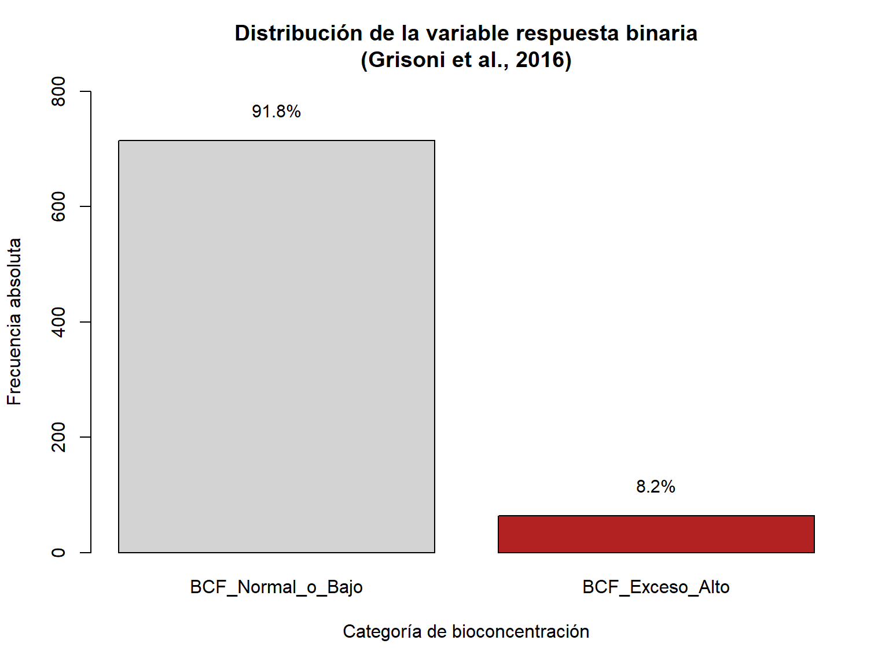
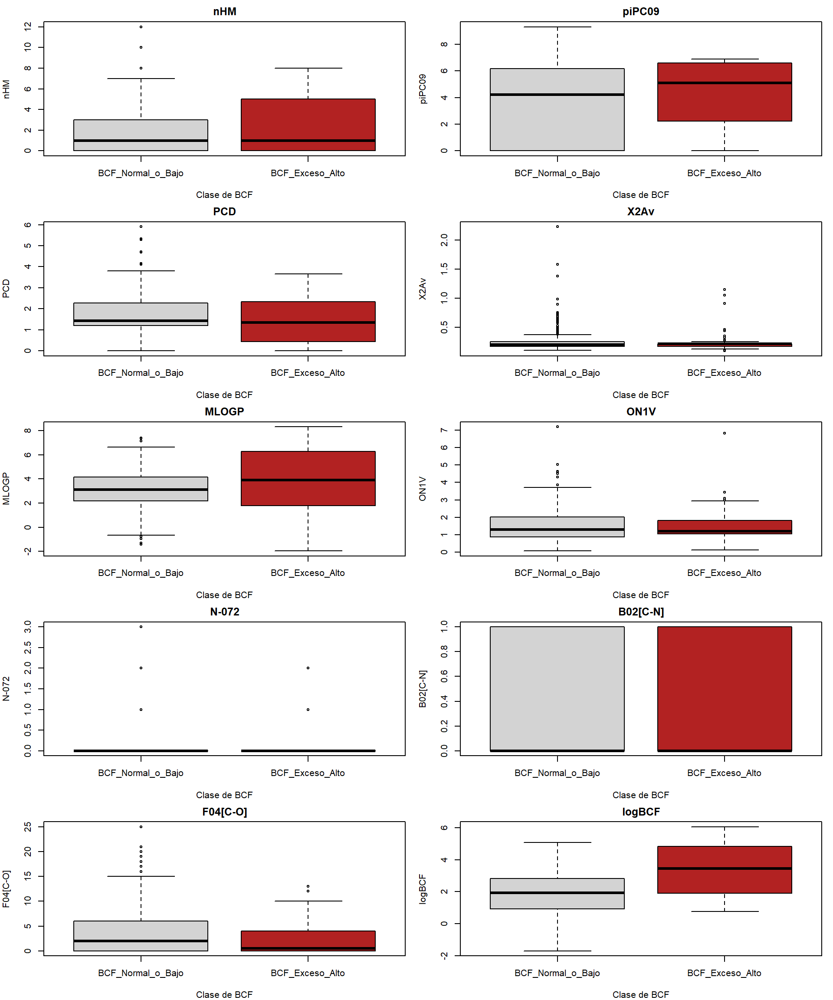
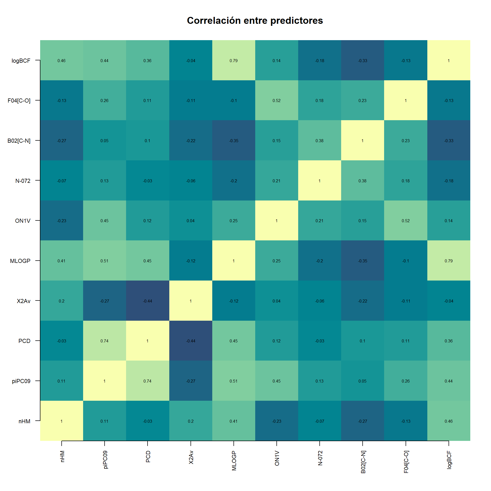

library(readr)
library(dplyr)
library(mRMRe)
library(infotheo)
library(class)
library(nnet)QSAR - Análisis de Bioconcentración (BCF)
Datos de Grisoni et al. (2016)
Introducción
Este documento analiza los datos de bioconcentración (BCF) del estudio de Grisoni et al. (2016), enfocándose en la clasificación binaria de compuestos según su nivel de BCF.
1. Carga de librerías
2. Carga de datos y binarización
# Cargar datos
url <- "https://archive.ics.uci.edu/ml/machine-learning-databases/00510/Grisoni_et_al_2016_EnvInt88.csv"
Data <- read_csv(url, na = "?")Rows: 779 Columns: 14
── Column specification ────────────────────────────────────────────────────────
Delimiter: ","
chr (3): CAS, SMILES, Set
dbl (11): nHM, piPC09, PCD, X2Av, MLOGP, ON1V, N-072, B02[C-N], F04[C-O], Cl...
ℹ Use `spec()` to retrieve the full column specification for this data.
ℹ Specify the column types or set `show_col_types = FALSE` to quiet this message.# Binarización: Clase 2 = "exceso de BCF" = alto riesgo
Data$Class_bin <- ifelse(Data$Class == 2, 1, 0)
# Convertir a factor con etiquetas descriptivas
Data$Class_bin <- factor(Data$Class_bin,
levels = c(0, 1),
labels = c("BCF_Normal_o_Bajo", "BCF_Exceso_Alto"))Distribución de clases
# Proporciones (%)
prop.table(table(Data$Class_bin)) * 100
BCF_Normal_o_Bajo BCF_Exceso_Alto
91.784339 8.215661 3. Visualización de la distribución
Tabla de frecuencias
# Tabla absoluta
tabla_abs <- table(Data$Class_bin)
print(tabla_abs)
BCF_Normal_o_Bajo BCF_Exceso_Alto
715 64 # Porcentajes
porcentajes <- prop.table(tabla_abs) * 100
print(porcentajes)
BCF_Normal_o_Bajo BCF_Exceso_Alto
91.784339 8.215661 Gráfico de barras
bp <- barplot(tabla_abs,
main = "Distribución de la variable respuesta binaria\n(Grisoni et al., 2016)",
xlab = "Categoría de bioconcentración",
ylab = "Frecuencia absoluta",
col = c("lightgray", "firebrick"),
ylim = c(0, max(tabla_abs) * 1.12))
# Añadir porcentajes
text(x = bp,
y = tabla_abs + max(tabla_abs) * 0.03,
labels = paste0(round(porcentajes, 1), "%"),
pos = 3, cex = 0.95)

4. Análisis descriptivo de predictores
# Primero verificamos los nombres de columnas disponibles
print("Nombres de columnas en el dataset:")[1] "Nombres de columnas en el dataset:"print(names(Data)) [1] "CAS" "SMILES" "Set" "nHM" "piPC09" "PCD"
[7] "X2Av" "MLOGP" "ON1V" "N-072" "B02[C-N]" "F04[C-O]"
[13] "Class" "logBCF" "Class_bin"# Seleccionar solo columnas numéricas (excluyendo Class y Class_bin)
numeric_cols <- sapply(Data, is.numeric)
X_names <- names(Data)[numeric_cols & !names(Data) %in% c("Class", "Class_bin")]
# Si quieres usar solo predictores específicos, descomenta y ajusta:
# X_names <- c("nHM", "piPC09", "PCD", "X2Av", "MLOGP",
# "ON1V", "N072", "B02[C-N]", "F04[C-O]")
print(paste("Número de predictores numéricos:", length(X_names)))[1] "Número de predictores numéricos: 10"print("Predictores seleccionados:")[1] "Predictores seleccionados:"print(X_names) [1] "nHM" "piPC09" "PCD" "X2Av" "MLOGP" "ON1V"
[7] "N-072" "B02[C-N]" "F04[C-O]" "logBCF" Resumen estadístico
summary(Data[X_names]) nHM piPC09 PCD X2Av
Min. : 0.000 Min. :0.000 Min. :0.000 Min. :0.0900
1st Qu.: 0.000 1st Qu.:0.000 1st Qu.:1.210 1st Qu.:0.1700
Median : 1.000 Median :4.263 Median :1.400 Median :0.2000
Mean : 1.755 Mean :3.468 Mean :1.551 Mean :0.2369
3rd Qu.: 3.000 3rd Qu.:6.250 3rd Qu.:2.285 3rd Qu.:0.2400
Max. :12.000 Max. :9.316 Max. :5.900 Max. :2.2300
MLOGP ON1V N-072 B02[C-N]
Min. :-1.960 Min. :0.08 Min. :0.0000 Min. :0.0000
1st Qu.: 2.190 1st Qu.:0.91 1st Qu.:0.0000 1st Qu.:0.0000
Median : 3.130 Median :1.27 Median :0.0000 Median :0.0000
Mean : 3.202 Mean :1.51 Mean :0.1861 Mean :0.4236
3rd Qu.: 4.235 3rd Qu.:2.02 3rd Qu.:0.0000 3rd Qu.:1.0000
Max. : 8.320 Max. :7.19 Max. :3.0000 Max. :1.0000
F04[C-O] logBCF
Min. : 0.000 Min. :-1.700
1st Qu.: 0.000 1st Qu.: 0.985
Median : 2.000 Median : 2.030
Mean : 3.585 Mean : 2.063
3rd Qu.: 6.000 3rd Qu.: 2.950
Max. :25.000 Max. : 6.060 Conteo por clases
table(Data$Class_bin)
BCF_Normal_o_Bajo BCF_Exceso_Alto
715 64 Boxplots comparativos
par(mfrow = c(5, 2), mar = c(4, 4, 2, 1))
for (var in X_names) {
boxplot(Data[[var]] ~ Data$Class_bin,
main = var,
xlab = "Clase de BCF",
ylab = var,
col = c("lightgray", "firebrick"))
}

Estadísticos por clase
stats_by_class <- Data %>%
group_by(Class_bin) %>%
summarise(
n = n(),
across(all_of(X_names),
list(media = ~ round(mean(., na.rm = TRUE), 2),
mediana = ~ round(median(., na.rm = TRUE), 2),
sd = ~ round(sd(., na.rm = TRUE), 2)),
.names = "{.col}_{.fn}")
)
print(stats_by_class)# A tibble: 2 × 32
Class_bin n nHM_media nHM_mediana nHM_sd piPC09_media piPC09_mediana
<fct> <int> <dbl> <dbl> <dbl> <dbl> <dbl>
1 BCF_Normal_o_B… 715 1.69 1 1.91 3.4 4.23
2 BCF_Exceso_Alto 64 2.47 1 2.62 4.2 5.11
# ℹ 25 more variables: piPC09_sd <dbl>, PCD_media <dbl>, PCD_mediana <dbl>,
# PCD_sd <dbl>, X2Av_media <dbl>, X2Av_mediana <dbl>, X2Av_sd <dbl>,
# MLOGP_media <dbl>, MLOGP_mediana <dbl>, MLOGP_sd <dbl>, ON1V_media <dbl>,
# ON1V_mediana <dbl>, ON1V_sd <dbl>, `N-072_media` <dbl>,
# `N-072_mediana` <dbl>, `N-072_sd` <dbl>, `B02[C-N]_media` <dbl>,
# `B02[C-N]_mediana` <dbl>, `B02[C-N]_sd` <dbl>, `F04[C-O]_media` <dbl>,
# `F04[C-O]_mediana` <dbl>, `F04[C-O]_sd` <dbl>, logBCF_media <dbl>, …5. Matriz de correlación
# Calcular matriz de correlación solo con variables numéricas
cor_matrix <- cor(Data[X_names], use = "complete.obs")
n_vars <- length(X_names)
image(1:n_vars, 1:n_vars, cor_matrix,
main = "Correlación entre predictores",
xlab = "", ylab = "",
col = hcl.colors(50, "BluYl"),
axes = FALSE)
axis(1, at = 1:n_vars, labels = X_names, las = 2, cex.axis = 0.7)
axis(2, at = 1:n_vars, labels = X_names, las = 2, cex.axis = 0.7)
text(expand.grid(1:n_vars, 1:n_vars), labels = round(cor_matrix, 2), cex = 0.5)

Conclusiones
Este análisis exploratorio proporciona una visión general de:
- La distribución de las clases de bioconcentración
- Las características de los predictores moleculares
- Las relaciones entre variables predictoras
Fuente de datos: Grisoni et al. (2016), Environmental International 88